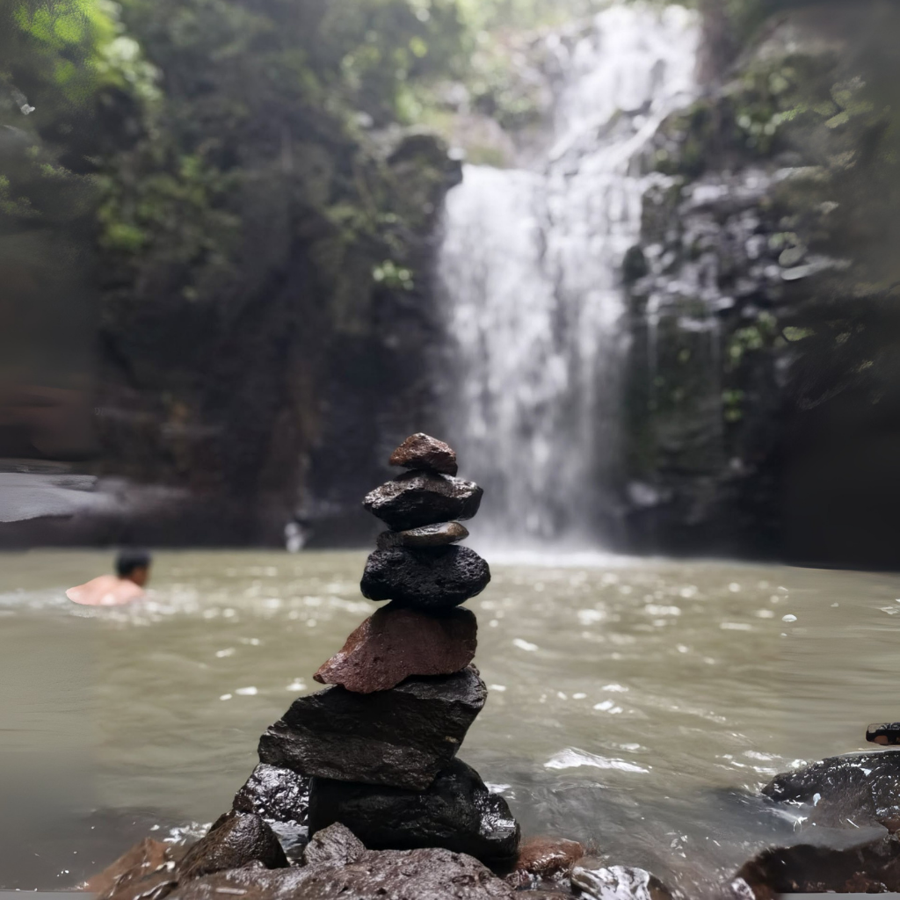
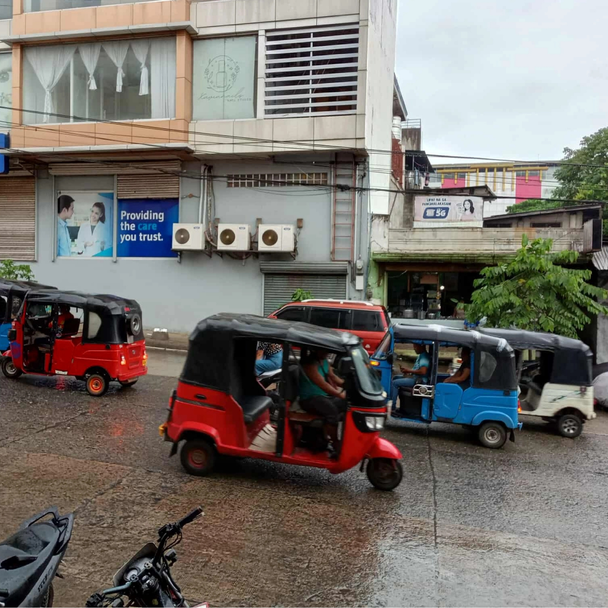
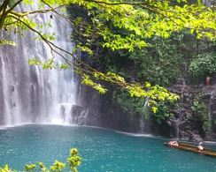
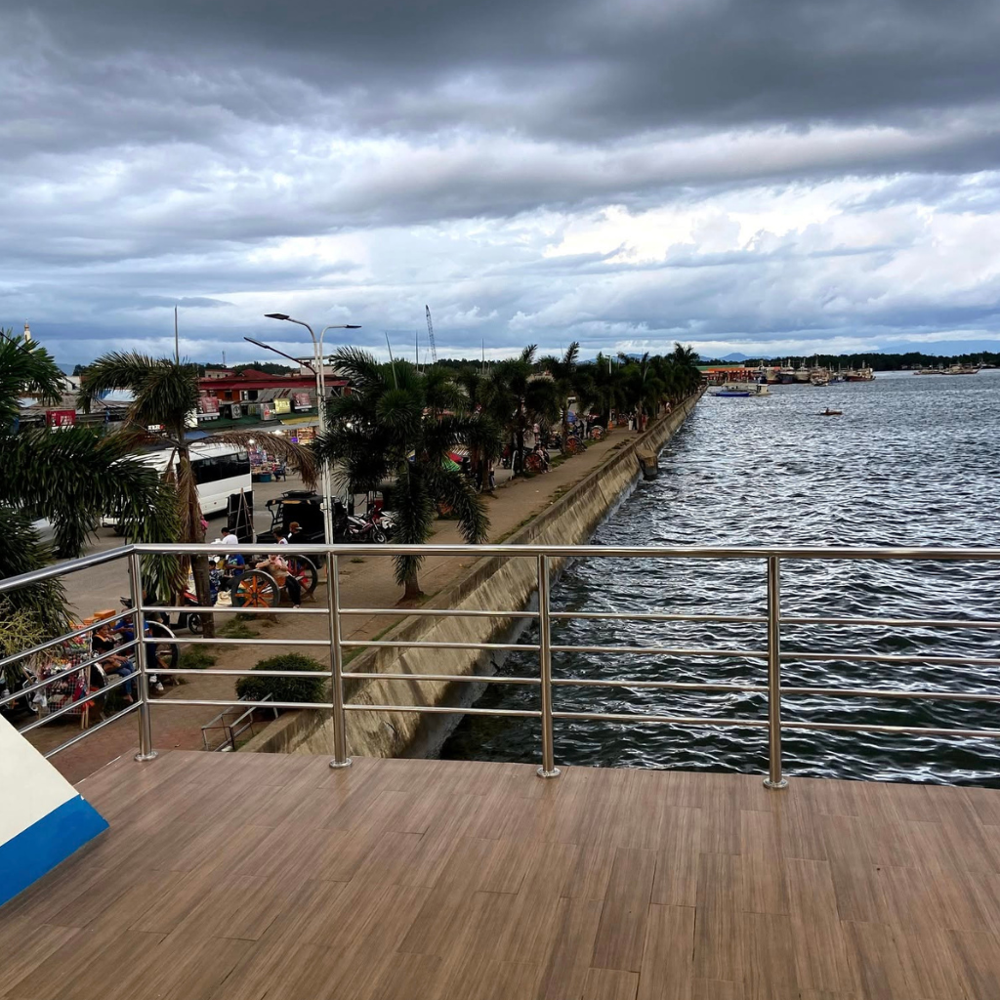
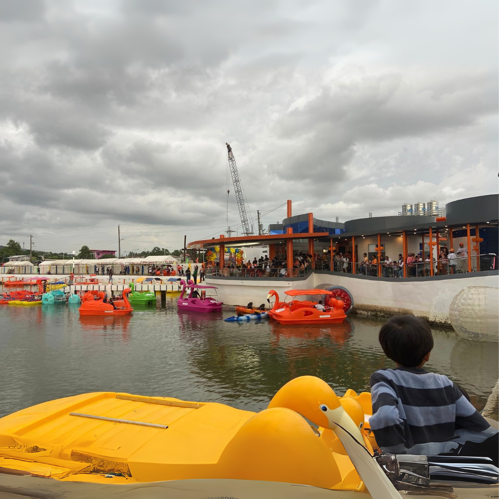
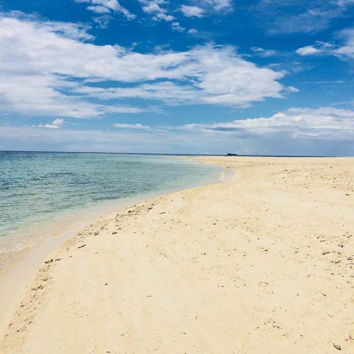

Destinations in and around Pagadian City






Pagadian Bay & Waterfront
The waterfront provides scenic views across the bay. It's a popular spot for sunset viewing and casual strolls. Local vendors and seafood markets are often nearby.
Scenic Hills & Viewpoints
Many hills around the city offer panoramic overlooks with sweeping views of Pagadian Bay and the urban landscape. These spots are excellent for photography and quiet observation.
Beaches & Island Hopping
Nearby islands and coastal barangays have sandy beaches and clear waters. Local boat tours and island hopping trips can be arranged through operators or local vendors.
Local Markets
Public markets in Pagadian offer fresh seafood, local produce, and regional delicacies. Visiting these markets provides a taste of daily life and local flavors.
Historical & Civic Sites
Pagadian City Hall and surrounding civic spaces offer insights into local governance and history. Small community museums or cultural centers can sometimes be found in nearby towns.